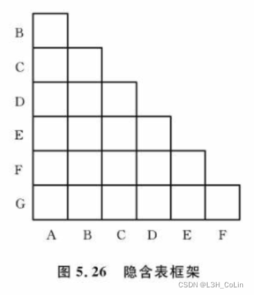
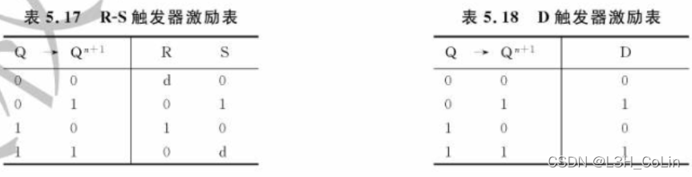
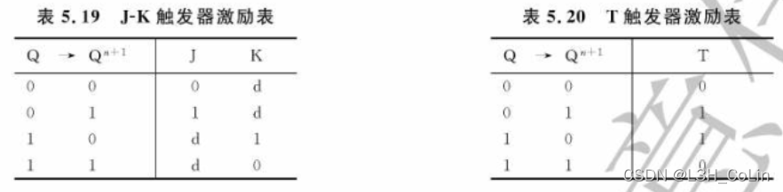

5.1 时序逻辑电路概述
5.1.1 时序逻辑电路描述方法
若逻辑电路在任何时刻产生的稳定输出信号不仅与电路在该时刻的输入信号有关，还与电路过去的输入信号有关，则称为时序逻辑电路。
根据电路中是否有统一定时信号分为两类：同步时序逻辑电路和异步时序逻辑电路。
一、逻辑函数表达式
同步时序逻辑电路的结构与功能，可以用三组逻辑函数表达式描述。
- 输出函数表达式：一组反映电路输出Z与输入x和状态y之间关系的表达式。
Mealy型电路：电路输出与输入和状态均有关
Moore型电路：电路输出仅与状态有关 - 激励函数表达式：控制函数，反映存储电路的输入Y与外部输入x和电路状态y之间的关系
- 次态函数表达式：次态函数用于反映同步时序电路的次态与激励函数和现态y的关系，与触发器类型相关。
二、状态表
反映同步时序电路输出Z、次态与电路输入x、现态y之间的关系的表格，又称状态转移表。Moore型电路的状态表中次态与输出分栏列出，Mealy型电路的状态表中次态与输出在一栏列出。两种电路的状态表中第一栏均为现态，第二栏为次态或次态/输出，其下分多栏对应不同x输入时的y或y/Z。
状态表清晰地给出了同步时序电路在不同输入和现态下的次态和输出。
三、状态图
一种反映同步时序电路状态转换规律及相应输入、输出取值关系的有向图。
每一个结点均代表一个存储电路状态，对于Moore型电路，其输出写在结点中，代表该结点的存储电路状态产生的输出；对于Mealy型电路，其输出写在箭头上，代表该箭头的发出端的存储电路状态与箭头上的输入共同决定的输出的值。
四、时间图
使用波形图的方式表示输入信号、输出信号与电路状态的取值在各时刻的对应关系，通常称为工作波形图。可以表示电路状态的转换时刻。
5.2 同步时序逻辑电路分析
5.2.1 分析方法与步骤
表格法与代数法。
一、表格分析法一般步骤：
- 写出输出函数与激励函数表达式
- 借助触发器功能表列出电路次态真值表
- 画出状态表和状态图（如有必要需画出时间图）
- 归纳电路逻辑功能
二、代数分析法一般步骤：
- 写出输出函数表达式和激励函数表达式
- 将激励函数表达式代入触发器的次态方程，导出电路的次态方程组
- 画出状态表和状态图
- 归纳电路逻辑功能
重要：各种触发器输出关于输入和状态的函数（仅列出钟控触发器）
R-S触发器：
D触发器：
J-K触发器：
T触发器：
5.3 同步时序逻辑电路设计
设计一般步骤：
- 根据功能需求形成原始状态图和原始状态表
- 状态化简，求出最小化状态表
- 状态编码，得到二进制状态表
- 选择触发器的类型，求出激励函数与输出函数最简表达式
- 画出逻辑电路图
5.3.1 建立原始状态图和原始状态表
- 确定电路类型：Moore型、Mealy型，大多数需求这两种都可以实现，但复杂程度可能不同
- 设定初始状态：时序逻辑电路在输入信号开始作用前的状态
- 根据需要记忆的信息添加新的状态：状态数量多少取决于需要记忆和区分的信息量
- 确定各时刻电路的输出：Moore型电路指出每个状态对应输出，Mealy型电路指出每个状态和输入的组合对应输出。
5.3.2 状态化简
-
状态等效
(1) 等效状态：对于所有可能的输入序列，分别从两个状态出发得到的输出序列完全相同，称两个状态等效。判断方法：输出相同且次态满足三种情况之一：次态相同、次态交错或互为现态、次态循环或为等效对。等效具有传递性。
(2) 等效类：若干彼此等效的状态组成的集合，其中任意两个状态均等效。
(3) 最大等效类：不是其他任何一个等效类的真子集的等效类 -
状态化简
隐含表法。步骤：
(1) 作出隐含表
(2) 找出等效对
(3) 求出最大等效类
(4) 状态合并
(5) 作出最简状态表隐含表：

5.3.3 状态编码
最小化状态表中用字母或数字表示的状态，指定一个二进制代码，形成二进制状态表。方法：相邻分配法。
以下情况分配相邻状态码，优先级依次降低：
- 次态相同，为现态分配相邻状态码
- 同一现态，为次态分配相邻状态码
- 输出相同，为现态分配相邻状态码
5.3.4 确定激励函数和输出函数并画出逻辑电路图
列出激励函数与输出函数真值表
使用卡诺图化简后写出最简表达式


5.3.5 注意的问题
- 电路是否能够自恢复。设计电路的最佳状态时电路正常状态下不会到达无效状态，其次是万一进入无效状态后能够在输入信号和脉冲作用下自动进入有效状态，后者称为“自恢复”，否则称为“挂起”。电路中包含多个无效状态时往往将无效状态构成的集合称为状态的无效序列，正常的状态称为有效序列。
- 电路是否会产生错误输出。处于无效状态时，是否会在输入信号和时钟脉冲作用下产生错误输出信号。
若存在“挂起”和错误输出，则需要进行设计修正。